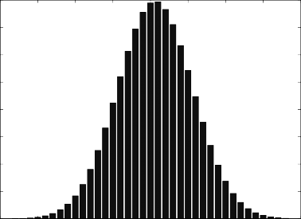

Given the estimates in Table 8.1, we can easily calculate the expected value of the factor premium for January 2004, which is time T + 1. Using Eq. (8.6), we obtained the expected value reported in Table 8.2. Table 8.3 reports that the estimate of the variance-covari- ance matrix . Since is a symmetric matrix, we report only the lower triangular part of the matrix. For example, the unemployment rate variance is 0.0187, which is roughly equal to (0.137)2. Thus the standard deviation of the unemployment factor is 0.13% per month.
The variance of the factor premiums calculated in the preceding section reflects the uncertainty of the future factor premiums. This
T A B L E 8 . 2

Predicted Value of Factor Premium from VAR
Unemployment | Consumer Sentiment | Market | Size | Value/Growth |
5.67 | 2.13 | —0.18 | 1.55 | 1.45 |
Note: Prediction for January 2004 based on the data from January 1996 to December 2003.
T A B L E 8 . 3

Variance-Covariance of Factor Premium Forecasts from VAR
Unemployment Consumer Market Size Value/Growth Sentiment | |||||
Unemployment | 0.0187 | ||||
Consumer sentiment | 0.0201 | 9.86 | |||
Market | 0.0068 | 2.58 | 24.63 | ||
Size | 0.1263 | 1.20 | 4.66 | 21.52 | |
Value/growth | —0.0413 | —0.2115 | —12.53 | —11.32 | 18.33 |
Note: Prediction for January 2004 based on the data from January 1996 to December 2003. Numbers represent variances and covariances of monthly stock returns.
uncertainty, like the uncertainty of stock returns themselves, is a component of investment risk and must be recognized as such. Even by recognizing the variance-related risk, though, we still have not fully acknowledged the risk inherent in forecasting until we consider parameter uncertainty. The variance computed above shows the part of the variation in the future factor premiums that cannot be explained by the model. This would be all that mattered if the model were exact and the parameters we estimated (ˆ0, …, ˆL)
were exact, but the parameters we estimated are not exact. All we
can say is that the true value of 0 , …, L is likely to be near what we have estimated with the VAR, and our confidence in the esti- mates is included in the standard error of the estimation. If the standard error of the estimation is large, there is more uncertainty regarding the future factor premiums, and, as a result, the invest-
ment risk is higher. To fully account for the parameter uncertainty in the computation of investment risk, we need to include the stan- dard error of 0, …, L in the calculation of the variance of the future factor premiums. We will examine two approaches to do this. One is an exact method, and the other is an approximate method.
In the exact method, we recognize that the future factor premi- um has two sources of variation, one coming from the estimation of
0, …, L and the other coming from the variation allowed in the model. The first component goes in a K(L+1) x K(L+1) dimensio- nal variance-covariance matrix V(ˆ 0 , …, ˆ L), and the second compo-
nent goes in a K x K dimensional variance-covariance matrix Vˆ() =
ˆ. Once we arrive at the VAR estimator, we can compute both these components in a straightforward way. The correct variance of the
future factor premium is
Vˆ(fT+1) = (1+d) ˆ (8.8)
where d is a constant computed from fT, …, fT–L (see Appendix 8A on the accompanying CD for details).
Table 8.4 is the recalculation of the variance-covariance matrix of fT+1 reported in Table 8.3. Note that each diagonal element of Table 8.4 is greater than the corresponding figure in Table 8.3. This shows that as we account for parameter uncertainty, our ignorance (measured by the variance) increases.
If the complexity of the setup increases and the number of parameters increases, this approach may no longer be feasible. The alternative method is known as bootstrapping. Given the sample of T observations, we can create T pseudosamples of T – 1 observations
T A B L E 8 . 4

Variance-Covariance of Factor Premium Forecasts, Parameter Uncertainty Considered
Unemployment Consumer Market Size Value/Growth Sentiment | |||||
Unemployment | 0.0196 | ||||
Consumer sentiment | 0.0211 | 10.37 | |||
Market | 0.0071 | 2.72 | 25.89 | ||
0.1328 | 1.26 | 4.90 | 22.63 | ||
Value/growth | —0.0434 | —0.2224 | —13.18 | —11.90 | 19.27 |
Note: Prediction for January 2004 based on the data from January 1996 to December 2003. Numbers represent variances and covariances of monthly stock returns.
by dropping one observation at a time. From each pseudosample, we estimate 0 , …, L and and obtain T sets of estimates. From each set of estimates, we calculate the predicted value of the future factor premiums and obtain T sets of future factor premiums. These T sets of future factor premiums can be treated as if each were
obtained from an independent forecaster (as we discussed at the beginning of this section). That is, the variance of the T sets of future factor premiums includes parameter uncertainty, as well as the variance of the model error.7
8.7 FORECASTING THE STOCK RETURN
Up to this point we have discussed ways to forecast the distribu- tion of the factor premium for time T + 1, namely, fT+1. We need to do this for factor premiums in the economic factor model. As we mentioned earlier, the factor exposure for time T + 1, i,T+1, is either observable or is assumed to be the same as the factor exposure was estimated from the data through time T. Given our forecasts for fT+1 and i,T+1, we can now proceed to the forecasting of the stock return. Assuming a normal distribution as usual, the distribution of

7 When an observation is dropped in the creation of the pseudosample, the order of the remaining T–1 observations should not change. The time distance among observa- tions should not change either. This reduces the effective sample size by more than one. For example, if f2 is dropped, we have to ignore not only f2 = 0 + 1f1 + 2 but also f3 = 0 + 1f2 + 3. Thus the effective sample size is reduced by 2. See Appendix 8A on the CD for a general discussion of bootstrapping.
the stock return is specified by estimating the mean and the variance.
From the relationship
ri,T+1 = i,T+1fT+1 + Ei,T+1 (8.9)
the mean and the variance of the stock return are
E(ri,T+1) = i,T+1 E(fT+1) (8.10)
V(ri ,T+1) = i,T+1V(fT+1)i,T+1 + V(Ei,T+1) (8.11)
We have the estimates for E(fT+1) and V (fT+1) from previous sections, and we know the value (or the estimate) of i,T+1. V(Ei,T+1) was estimated in previous chapters. Thus we simply may substi- tute the estimates for each component and obtain the estimates for the mean and the variance of the stock return, that is,
Eˆ(ri,T+1) = i,T+1 Eˆ(fT+1) (8.12)
Vˆ(ri,T+1) = i,T+1Vˆ(fT+1)i,T+1 +Vˆ(Ei,T+1) (8.13)
If we estimate i,T+1, then this expression does not account for the uncertainty regarding the true value of i,T+1. We have to add the estimation error generated in the estimation of i,T+1 to the
preceding formula. Note that the estimation error is captured by
i,T+1
i,T+1
i,T+1
the variance-covariance matrix V(ˆ ) estimated in the preceding
chapter. The only question is how this term enters into the preced- ing equation. We provide the exact formula in Appendix 8A on the accompanying CD.
Table 8.5 reports the mean and standard deviation estimates of selected stock returns for January 2004. The last column in the
T A B L E 8 . 5

Predictive Return Distribution for Selected Stocks
Ticker | Mean | SD | SD* |
GE | —1.27 | 7.96 | 8.17 |
MSFT | —2.08 | 13.76 | 14.17 |
PFE | —0.69 | 6.61 | 6.87 |
WMT | —0.39 | 7.97 | 8.31 |
XOM | 0.62 | 5.01 | 5.20 |
Note: Prediction for January 2004 based on the data from January 1996 to December 2003. SD is the standard deviation, and SD* is the standard deviation considering parameter uncertainty. All numbers are expressed in percentage. Company names for ticker symbols are Exxon Mobil (XOM), General Electric (GE), Pfizer (PFE), Wal-Mart (WMT), and Microsoft (MSFT).
F I G U R E 8 . 1
Predictive return for Exxon Mobile stock (January 2004). (Based on the data from January 2000 to December 2003.)

0.08
0.07
0.06
Probability
Probability
Probability